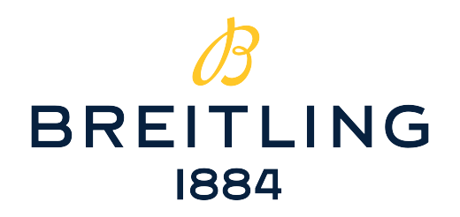

브라이틀링 Breitling
브라이틀링(Breitling)은 1884년 스위스 Saint-Imier에서 Léon Breitling이 창립한 스위스 고급 시계 제조사이다. 본사는 그렌헨에 있고 생산은 La Chaux-de-Fonds에서 이루어진다.
최종 업데이트

브라이틀링은 어떤 브랜드인가
브라이틀링은 다이빙용 SuperOcean과 항공용 Navitimer를 중심으로 기계식 및 쿼츠 시계를 판매하는 스위스 고급 시계 브랜드이다. 본사는 그렌헨에, 생산 거점은 La Chaux-de-Fonds에 있다.
무브먼트는 COSC 크로노미터 인증을 받은 것이 일반적이며, 항공 모델의 항공 기능은 대체로 장식적인 복잡 기능으로 제공된다. 광택 케이스와 브레이슬릿, 가독성을 높인 큰 문자판이 디자인의 특징이다.
오랫동안 Valjoux, ETA, Venus 등에서 무브먼트를 공급받았으나 2009년 자체 개발한 B01을 선보였다. 2022년부터 Partners Group이 소유하고 있으며, 2023년에는 첫 대형 인수로 Universal Genève를, 2025년에는 Gallet를 사들였다.
브라이틀링은 어떻게 시작되고 성장했나
브라이틀링은 1884년 Léon Breitling이 Saint-Imier에서 설립했다. 1914년 그가 사망하자 사업은 아들 Gaston에게, 1935년에는 손자 Willy에게 넘어갔다.
Willy의 자녀들이 가업을 잇는 데 관심이 없어 La Chaux de Fonds의 공장은 1978년 12월 문을 닫았고, Willy는 1979년 5월 사망했다. 같은 1979년 Sicura의 소유주였던 Ernest Schneider가 창업 가문에서 브라이틀링 이름을 사들였다.
생산은 그렌헨의 Sicura 공장으로 옮겨졌고, 이 회사는 Montres Breitling AG를 거쳐 1994년 Breitling AG로 이름을 바꾸었다.
브라이틀링의 브랜드 아이덴티티는 무엇인가
1884년 창립해 항공용 Navitimer와 다이빙용 SuperOcean을 앞세우며, 2009년 자체 B01 칼리버를 개발한 스위스 시계 브랜드이다.
브라이틀링의 대표 제품과 서비스는 무엇인가
대표 라인은 다이빙용 SuperOcean과 항공용 Navitimer이다. Navitimer는 1954년 출시되었으며, 이름은 Navigation과 Timer 두 단어에서 따왔고 베젤의 원형 계산자가 특징이다.
1961년 Mercury 계획의 우주비행사 Scott Carpenter의 요청으로 24시간 다이얼 모델을 만들었고, 그는 1962년 우주비행에서 이를 착용했다. Chronomat는 1942년 출시되어 가장 많이 팔리는 모델 중 하나이며, 2009년 출시된 현행 모델은 자체 B01 칼리버를 탑재한 첫 전량 자체 제작 시계이다.
Emergency 시계는 민간 항공용 무선 송신기를 내장한다.
브라이틀링은 지금 어떤 상태인가
2022년 12월 23일 스위스 투자·사모펀드 회사 Partners Group이 CVC로부터 브라이틀링 지분 대부분을 넘겨받았다. Partners Group의 공동 창업자 Alfred Gantner가 이사회 의장을 맡았다.
이에 앞서 2017년 4월 Theodore Schneider가 지분 80%를 CVC Capital Partners에 매각했고, 나머지 20%는 2018년 11월 매각했다. 2023년에는 Universal Genève를, 2025년에는 Gallet를 인수했다.
브라이틀링 로고는 어떻게 변해왔나
자주 묻는 질문
브라이틀링는 어느 나라 브랜드인가요?
브라이틀링는 스위스의 패션·럭셔리 브랜드입니다.
브라이틀링는 언제 설립되었나요?
브라이틀링는 1884년 설립되었습니다.
브라이틀링의 브랜드 아이덴티티는 무엇인가요?
1884년 창립해 항공용 Navitimer와 다이빙용 SuperOcean을 앞세우며, 2009년 자체 B01 칼리버를 개발한 스위스 시계 브랜드이다.
브라이틀링의 대표 제품은 무엇인가요?
대표 라인은 다이빙용 SuperOcean과 항공용 Navitimer이다.
브라이틀링는 현재 어떤 상태인가요?
2022년 12월 23일 스위스 투자·사모펀드 회사 Partners Group이 CVC로부터 브라이틀링 지분 대부분을 넘겨받았다.
브라이틀링의 창업자는 누구인가요?
브라이틀링의 창업자는 Léon Breitling입니다(위키데이터 기준).
브라이틀링의 본사는 어디에 있나요?
브라이틀링의 본사는 그렌헨에 있습니다(위키데이터 기준).
출처와 검증
브라이틀링 관련 참고: 공식 웹사이트 · 위키데이터 Q665740 · 한국어 위키백과 · 영어 위키백과. 브랜드명은 한글과 원어를 함께 표기하되 데이터에 없는 표기는 만들지 않습니다. 기원 국가·설립연도는 검수된 정의문에서 확인된 값을 우선하고, 없을 때만 공식 웹사이트 URL이 일치하는 위키데이터 개체의 값을 씁니다. 위키데이터 값은 2026-11-11 기준입니다.